Mario's Pizza's
| 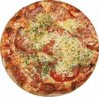 | Hawaii | Tomaat, kaas, ananas, ham. € 10,00 Pizza met een exotische tint. |
|---|---|---|
| 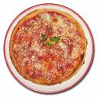 | Margarita | Tomaat, kaas, oregano (vegetarisch). € 8,00 De basis van alle pizza's. |
| 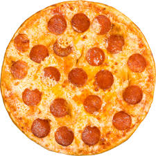 | Pepperoni | Tomaat, kaas, champignons, paprika, uien, pepers. € 9,00 Vegetarisch en pikant. |
| 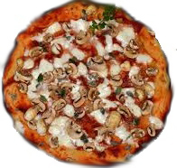 | Funghi | Tomaat, kaas, paddestoelen, zwarte olijven (vegetarisch). € 10,50 Pizza van de jager. |
| 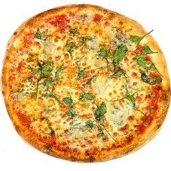 | Quattro Stagioni | Tomaat, kaas, ham, champignons, olijven, artisjokken. € 10,00 Beroemde pizza uit Lazio. |
| 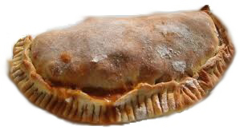 | Calzone | Gevulde dubbelgevouwen pizza, met diverse ingrediënten. € 11,00 Voor wie meer wil. |
| 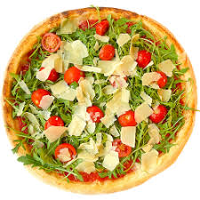 | Prosciutto | Met rucola en rauwe ham uit Milaan. € 11,00 Een klassieker. |
| 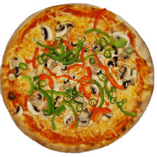 | Diavola | Tomaat, kaas, salami, pepers. € 10,50 De pizza van de duivel. |
| 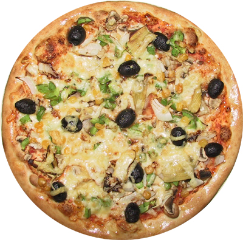 | Napolitana | Tomaat, kaas, ansjovis, olijven. € 10,00 Zuidelijke pizza met pit. |
| 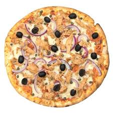 | Tonno (e cipolla) | Tomaat, kaas, tonijn, ui. € 12,00 Voor de visliefhebber. |
| 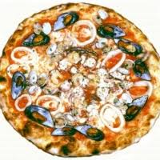 | Frute di Mare | Met gamba’s, ansjovis, mosselen, krab, uien en kappertjes (vegetarisch). € 14,00 |